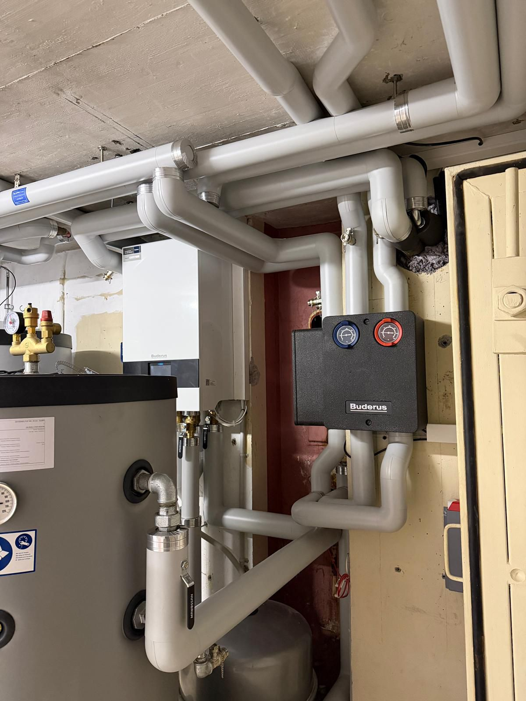

Wärmepumpen
Beratung, Dimensionierung und Einbindung effizienter Wärmepumpensysteme.
Heizungen inkl. Wärmepumpen
TRUE HLK plant, ersetzt und modernisiert Heizungsanlagen mit Blick auf Energieverbrauch, Betriebssicherheit und saubere Ausführung. Wärmepumpen sind dabei ein zentraler Teil moderner Heizsysteme.

Leistungsbereich
Eine Heizung muss zum Gebäude, zur Nutzung und zum Budget passen. Wir prüfen die Ausgangslage, klären technische Möglichkeiten und setzen die Lösung fachgerecht um.
Beratung, Dimensionierung und Einbindung effizienter Wärmepumpensysteme.
Geordneter Ersatz alter Anlagen mit klarer Terminplanung und sauberer Montage.
Optimierte Heizungsverteilung für gleichmässige Wärme und effiziente Leistung.
Technische Erneuerung bestehender Anlagen mit Blick auf Zukunft und Betrieb.

Technische Sorgfalt
Gute Heiztechnik zeigt sich nicht nur am Gerät. Entscheidend sind hydraulische Einbindung, Verteilung, Regelung und eine Ausführung, die später nachvollziehbar bleibt.
Ablauf
Gebäude, Anlage und Verbrauch werden vor Ort aufgenommen.
Wir definieren die passende Heizlösung und die nötigen Arbeitsschritte.
Die Umsetzung erfolgt sauber, koordiniert und mit Rücksicht auf den Betrieb.
Nach der Inbetriebnahme bleiben Wartung und Kontrolle klar geregelt.